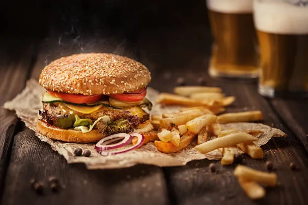

Burger & Fries
Home

Description
Big, bold, and unapologetically messy. Think half-pound patties, charred edges, juicy centers, and toppings that mean business: thick-cut bacon, melty cheddar, grilled onions, maybe a fried egg if you’re feeling outlaw. Served with crispy, hand-cut fries—golden outside, fluffy inside—often dusted with a touch of seasoned salt or smoky paprika.
Ingredients
Burger
- 2 lb (900 g) 80/20 ground beef
- 1½ tsp kosher salt
- 1 tsp coarse black pepper
- 4 slices thick-cut cheddar
- 4 large sturdy burger buns
- 8 slices thick-cut bacon
- 1 large onion, sliced into ½-inch rings
- 2 tbsp butter
- your prefered toppings
Fries
- 4 large russet potatoes
- 2–3 Tbsp cornstarch
- 1½ tsp kosher salt
- 1½ tsp course black pepper
- ½ tsp smoked paprika
Steps
- Cut potatoes into ¼-inch sticks.
- Rinse in cold water until the water runs mostly clear.
- Soak in a large bowl of cold water for at least 30 minutes.
- Drain and pat completely dry with a clean towel.
- Divide beef into 4 equal portions.
- Gently form into patties about 1 inch thick, making a small dimple in the center.
- Season just before cooking with salt and pepper.
- Heat oil to 325°F.
- Fry potatoes in small batches for 4–5 minutes until pale and softened.
- Drain on a wire rack or paper towels.
- Heat skillet until smoking. Cook patties 3–4 minutes per side. Add cheese, cover for melt.
- Spread butter on cut sides and toast on the grill/griddle until golden.
- Raise oil to 375°F (191°C).
- Fry potatoes until deep golden and crisp.
- Drain, toss with salt (and paprika if using).
- Assemble Burger and Fries